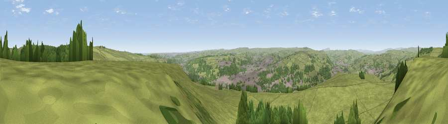

Viewpoint near Riddlesden
#7038 in England · top 3% of its area beats it · near Riddlesden · access?Where it is
The exact computed spot (SE 07425 44475). Click the marker for map links.
Public access: no public right of way or access land is recorded at this exact spot — it may be on private land. Computed from Natural England's CRoW access layer and OpenStreetMap rights of way — not the legal definitive map. Always verify locally.
The view, rendered

A 360° render of this exact spot computed from the terrain model, tree cover and land cover — summer colours, afternoon light, calibrated against photographs of famous viewpoints. Real trees, hedges and buildings will differ in detail.
The panorama
Grey silhouette: terrain skyline in each direction (720 bearings, Earth curvature and refraction included). Dashed green: skyline with trees (+15 m) and buildings (+8 m) as obstacles. Blue strip: how far the ground is visible on each bearing.
Where the view opens
Wedge length = distance to the farthest visible ground on that bearing (vegetation-aware). Rings at 10, 25 and 50 km.
What fills the view
72% grassland · 21% woodland · 7% built-up
Angular shares of the visible panorama (visual magnitude), not map area. Landscape diversity 0.33 (0–1 Shannon).
Key numbers
More beautiful places nearby
The staircase of upgrades: each row has a higher view potential than everything closer. Driving times are estimates from straight-line distance, calibrated against real road routing — check an actual route before setting out.
| Place | Direction | Drive | Score |
|---|---|---|---|
| Viewpoint near Addingham | NNE · 2 km | ~6 min | 68.6 |
| Viewpoint near Addingham | N · 3 km | ~7 min | 68.9 |
| Viewpoint near Baildon | SE · 8 km | ~16 min | 70.4 |
| Viewpoint near Otley | E · 13 km | ~23 min | 77.5 |
| Viewpoint near East Witton | N · 41 km | ~60 min | 77.8 |
| Little Ingleborough | NW · 44 km | ~64 min | 78.8 |
| Viewpoint near Ingleton | NW · 45 km | ~65 min | 79.5 |
| Darwen Hill | WSW · 46 km | ~66 min | 80.7 |
53.89640, -1.88850 · source: screening · position refined by local search. Computed location — check access rights before visiting.